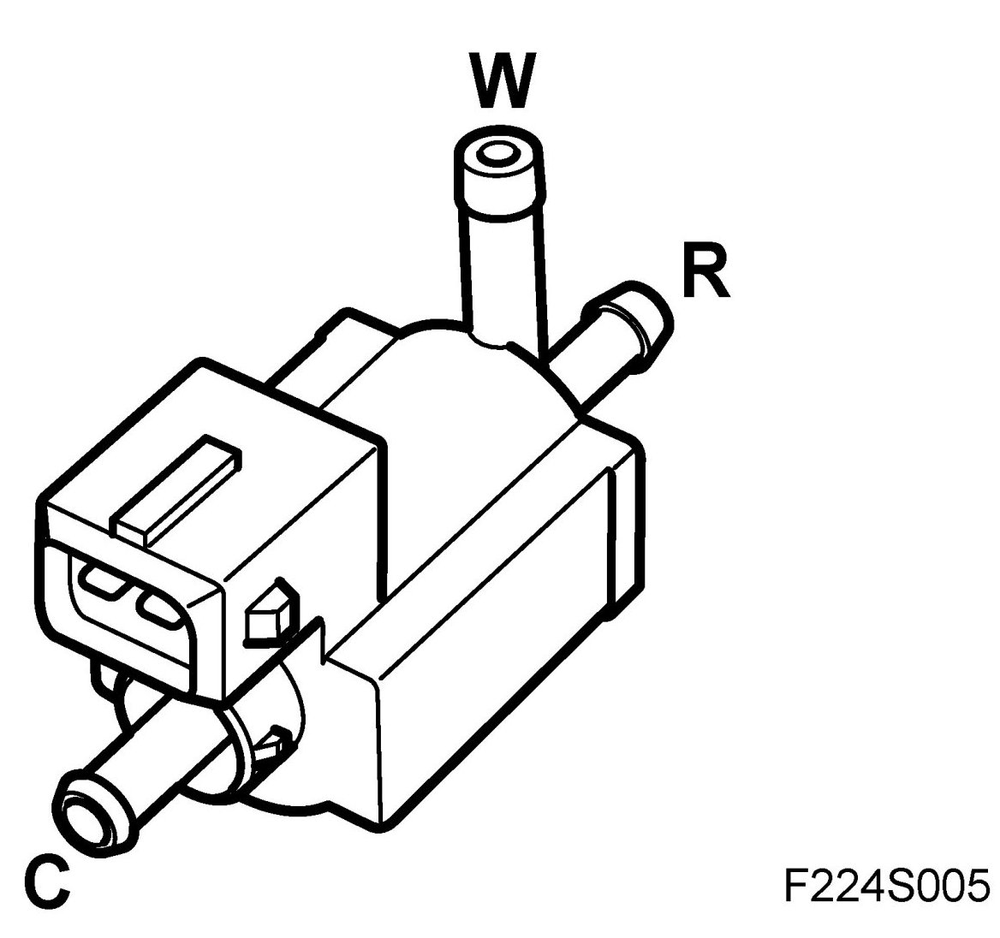
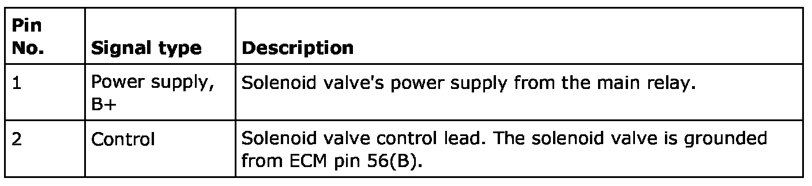
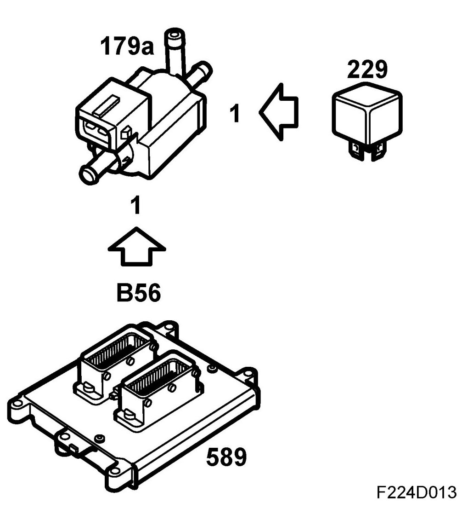
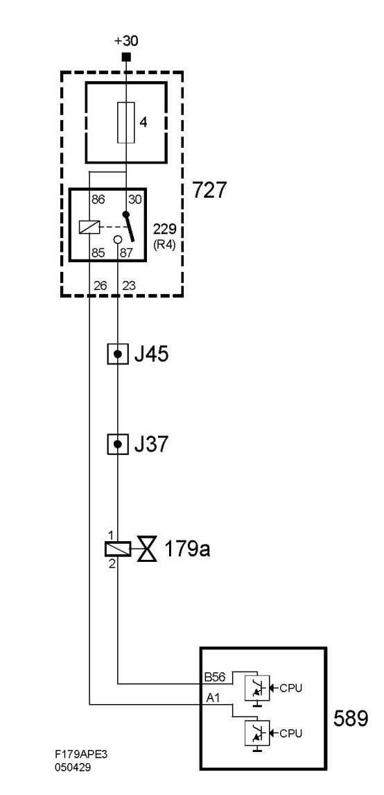

Wastegate Solenoid: Description and Operation
Charge Air Solenoid Valve (179a), T8
Location
Charge air solenoid valve (179a)
Main task
Air flow from the turbo unit compressor is regulated with a solenoid valve that pneumatically controls the wastegate of the exhaust turbine.
Type

Connection



Compressor flow increases as the pulse ratio increases.
When the requested airmass/combustion is too large to be regulated by the throttle alone, turbo control must provide for the remaining need. The remaining portion is converted to a PWM, which controls the charge air control valve, which will then guide the wastegate in an opening direction. Flow through the exhaust valve is limited due to exhaust flow through the wastegate.
The value for atmospheric absolute air pressure and the temperature of intake air are used to correct the conversion. With low atmospheric pressure or high intake air temperature, a greater PWM ratio is needed to maintain the same airmass/combustion.
The control module then checks that the actual airmass/combustion matches that requested. If necessary, the PWM ratio is adjusted by multiplying it by a correction factor.
The correction factor (adaption) is stored in the control module memory and is always included when calculating the PWM ratio.
The purpose is to have the actual airmass/combustion equal the request as quickly as possible after a load change. The adaption limit is 100 %.